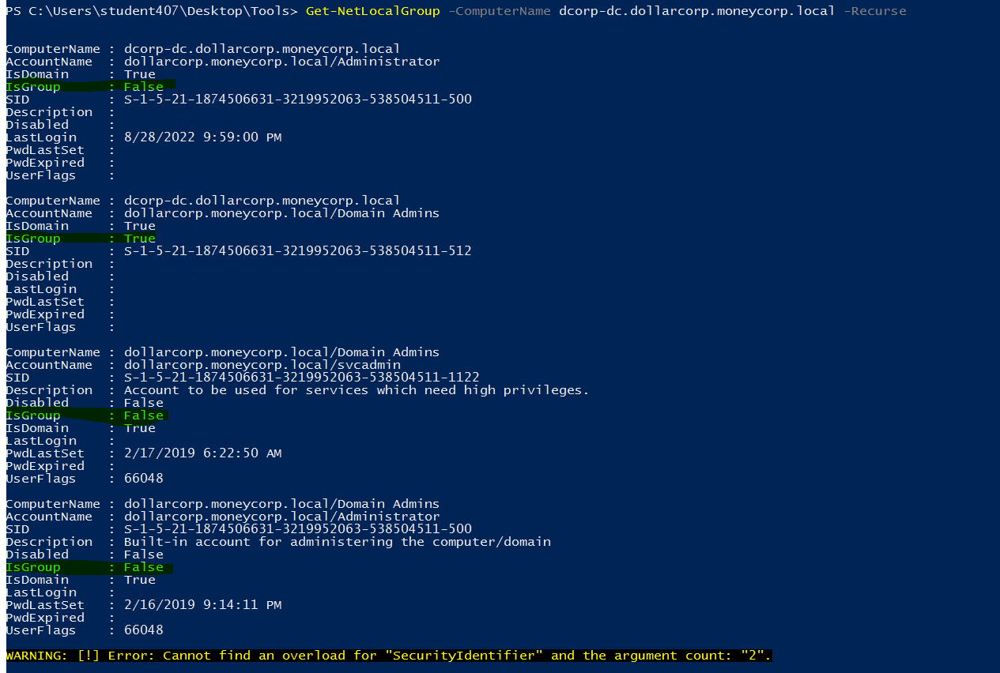
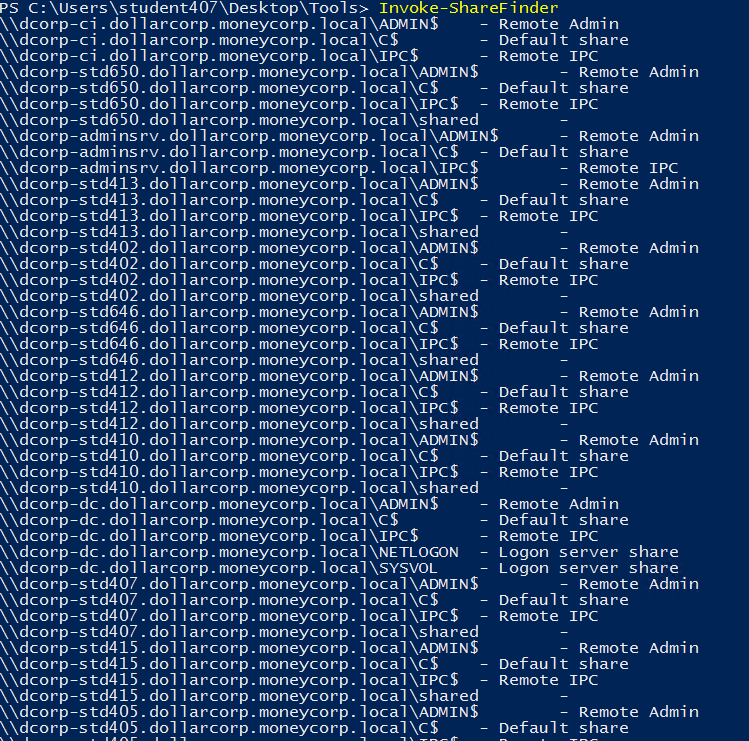
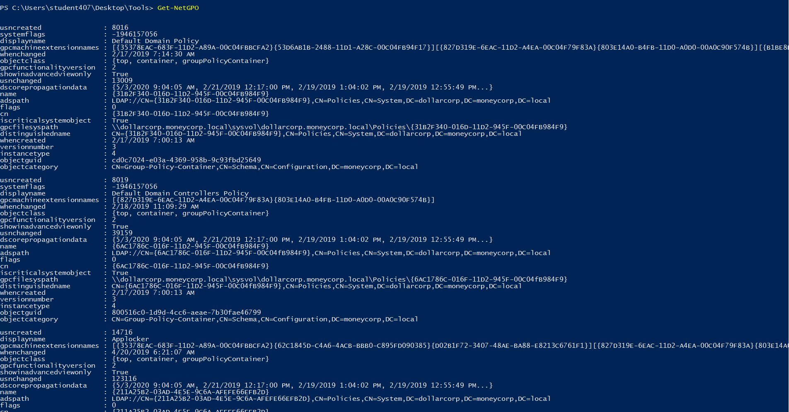
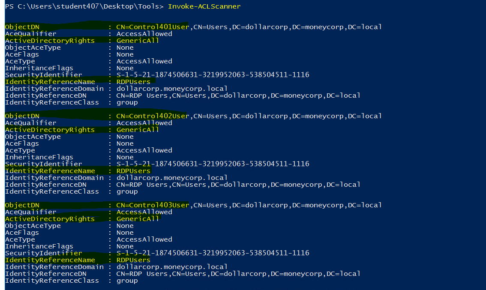
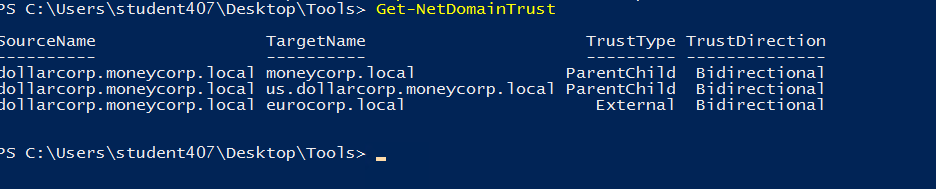
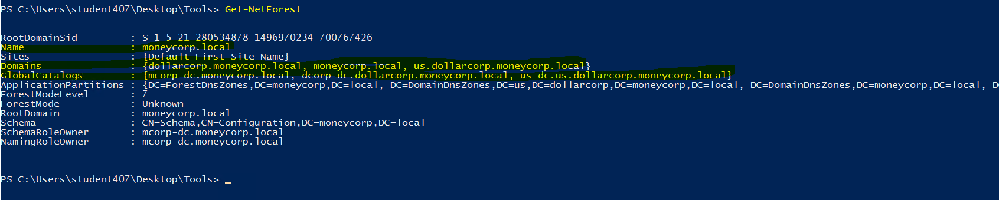

Introduction
In this article, we continue explaining PowerView commands for Active Directory domain enumeration. I know this topic can feel tedious, but it is essential to cover these commands so that everyone is familiar with the tools available during an engagement.
Prerequisites
In the previous article, we learned how to load scripts into memory and how to bypass Windows Defender and AMSI. Please follow the previous article first so you have the full context before proceeding.
PowerView Commands
Get-NetLocalGroup -- Enumerate Local Groups on a Machine
This command displays the local groups on a specific machine:
Get-NetLocalGroup -ComputerName dcorp-dc
After running this command, it extracts the local groups and the users within each group. If you look at the IsGroup column, a value of True means the entry is a group, while a value of False means it is an individual user.

Invoke-ShareFinder -- Discover Shared Folders
This command enumerates shared folders across all machines in the domain:
Invoke-ShareFinder -Verbose
This is useful for discovering potentially sensitive files or misconfigured shares that may contain credentials, configuration files, or other valuable data.

Get-NetGPO -- List Group Policy Objects
This command displays the Group Policy Objects (GPOs) present in the domain:
Get-NetGPO
GPOs define policies and configurations that are applied across the domain, and reviewing them can reveal security misconfigurations or interesting settings.

Invoke-ACLScanner -- Identify Exploitable Access Control Lists
This command checks whether any group has elevated permissions over a specific user or group (Access Control List analysis):
Invoke-ACLScanner -ResolveGUIDs
Before executing this command, it is important to understand the types of permissions that matter to us as attackers:
-
GenericAll -- This permission gives you full control over the object, including the ability to add it to a group, change its password, and more.
-
GenericWrite -- This permission allows you to modify the properties of the object. For example, you could assign a malicious script that runs automatically when the user logs in.
-
WriteOwner -- This permission allows you to change the owner of the object to a user that you control.
-
WriteDACL -- This permission allows you to add high-level permissions to a specific user, effectively giving them control over the object.
-
ForceChangePassword -- This permission allows you to change the password of the target object.
Important note: When I say "object," it can refer to either a group or an individual user.
After executing the command, we can observe in the IdentityReferenceName column that users in the RDPUsers group have GenericAll permission over the user Control401User. As we explained above, GenericAll means full control -- we could, for example, change this user's password or add them to another group.

Get-NetDomainTrust -- Map Trust Relationships
This command displays the trust relationships between domains:
Get-NetDomainTrust
After running this command, we observe the following:
- The domain
dollarcorp.moneycorp.local(where we are currently located) has a Bidirectional (Two-Way) Trust withmoneycorp.local. - The domain
dollarcorp.moneycorp.localalso has a Bidirectional (Two-Way) Trust witheurocorp, but this trust is marked as External, meaning the two domains are in different forests.
Why is trust relationship information useful?
If we manage to gain high-level privileges on the dollarcorp.moneycorp.local domain, we can leverage the trust relationship to move into the moneycorp.local domain and compromise it as well. This is an advanced topic that will be covered in future articles.
Note: I explained the different types of trust relationships in detail in the first article of this series.

Get-NetForest -- Gather Forest Information
This command displays information about the forest we are operating in, including how many domains exist, the forest name, and the Domain Controllers:
Get-NetForest
From the output, we can see that:
- The forest name is
moneycorp.local - The domains in this forest are:
moneycorp.localdollarcorp.moneycorp.localus.dollarcorp.moneycorp.local- The Domain Controllers are:
mcorp-dc.moneycorp.localdcorp-dc.dollarcorp.moneycorp.localus-dc.us.dollarcorp.moneycorp.local
This gives us a comprehensive view of the entire Active Directory forest structure, which is critical for planning lateral movement and cross-domain attacks.
